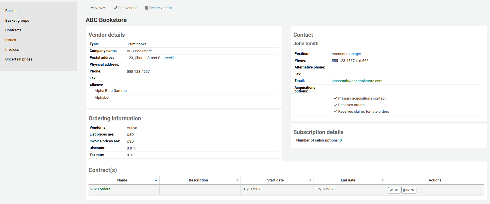
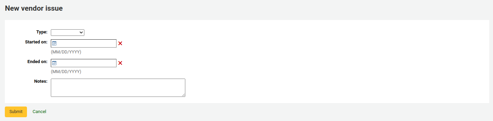
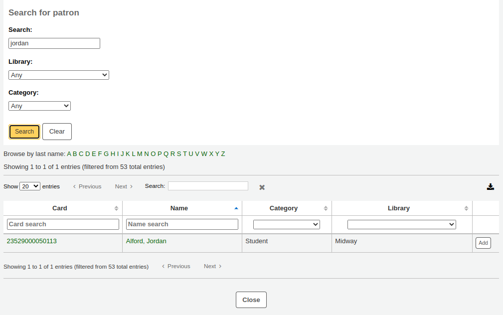
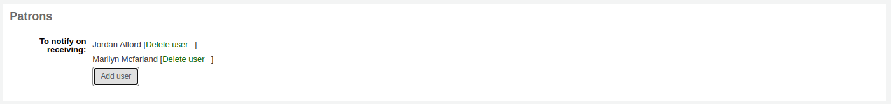
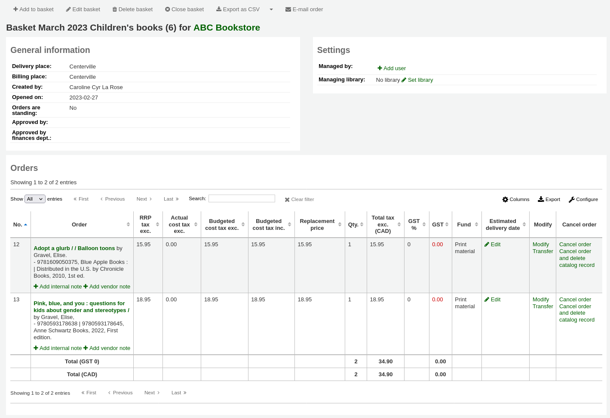
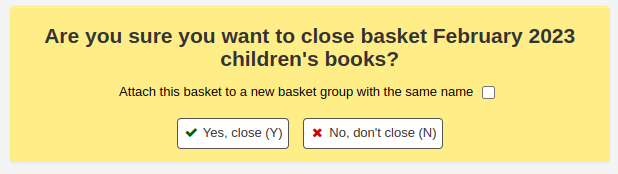
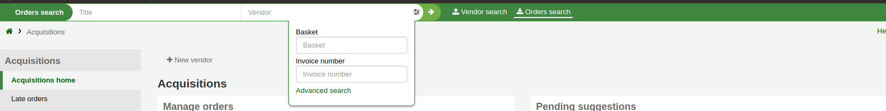
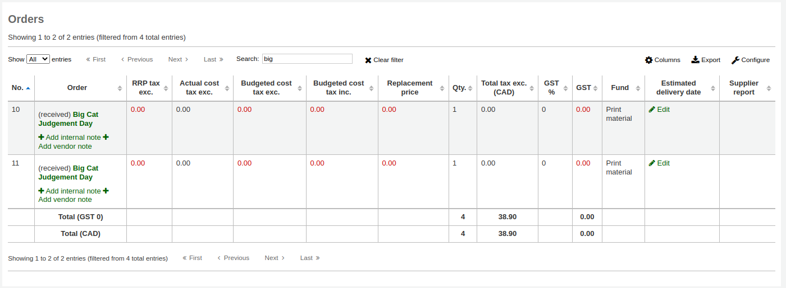
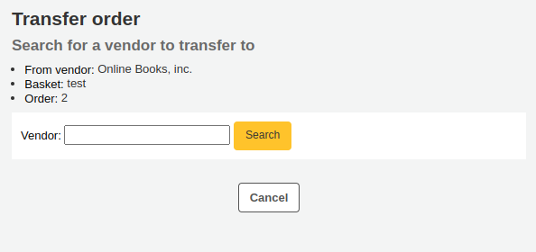
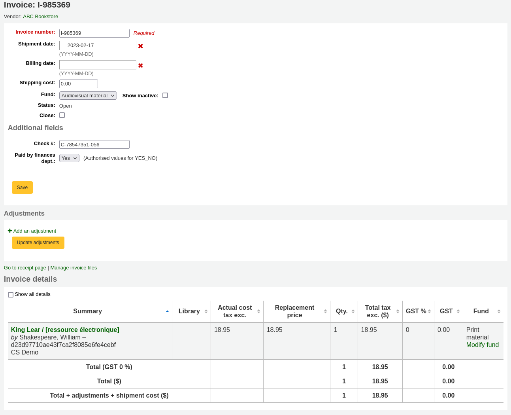

採訪
Koha’s acquisitions module provides a way for the library to record orders placed with vendors and manage purchase budgets.
到這： 其他 > 虛擬書架
Setting up the acquisitions module
Before using the acquisitions module, you need to make sure that you have completed all of the set up.
First, set your acquisitions system preferences and acquisitions administration to match your library’s workflow. Before setting your EDI accounts and library EANs, you will need to have entered your vendors.
從採訪首頁可看到圖書館基金的清單。

Learn more in the Budget/fund tracking section.
供應商
必須先鍵入供應商才能送出訂單。
Adding a vendor
To add a vendor click the ‘New vendor’ button on the acquisitions module main page.
The new vendor form is broken into three sections: company information, contacts and ordering information.
Company information: basic information about the vendor
Name (required): this name is the name that will appear everywhere in Koha when referring to this vendor
Postal address, physical address, phone, fax, website, account number: these fields are optional and should be filled to help with generating claim letters and invoices
Vendor type: use this field as needed to categorize your vendors (for example, bookseller, donor, electronic resource provider)
备注
By default, this field is a free text field. If you’d rather have a drop-down menu, add values in the VENDOR_TYPE authorized value category.
Aliases: add one or more aliases to a vendor as additional keywords to search with in the vendor search. For example, the vendor ‘American Library Association’ could have the alias ‘ALA’.
Contacts: information regarding your contact(s) at the vendor’s office
這些欄位都不是必備，祗對追蹤與供應商的連絡資訊有用
採訪主辦人：勾選此方框表示此人為對此採訪代理商的窗口
期刊主辦人：勾選此方框表示此人為對此期刊採訪代理商的窗口
Contact when ordering? check this box if you want to be able to send your orders by email directly to this person (see the editing baskets section below)
Contact about late orders? check this box if you want to be able to send your acquisitions claims by email directly to this person
Contact about late issues? check this box if you want to be able to send your serials claims by email directly to this person
按 ‘新增連絡人’ 鈕，就能對代理商新增其他連絡人
Interfaces: information regarding the vendor’s website, software, or portal that you use to manage orders or gather statistics from this vendor or organisation. Entering an interface is not required, use this section only to keep track of the information within Koha. To add a vendor interface, click on ‘Add another interface’.
Fill out the form (all fields are optional):
Name: enter the name of the interface, this will be visible in Koha.
Type: choose the interface type.
备注
Values in this drop-down menu are managed in the VENDOR_INTERFACE_TYPE authorized value category.
URI: enter the interface’s URL address.
Login: enter the username for the vendor interface.
Password: enter the password for the vendor interface.
备注
The password entered here will be encrypted in the database. It will not be shown by default in the vendor details page, there will be a ‘Show’ link in place of the password which can be clicked to display the password.
Account email: enter the email used for the account on this interface.
Notes: enter any notes regarding this interface.
Click ‘Add another interface’ if you need to add more than one interface for this vendor.
Ordering information: general billing information
向供應商發出訂單前必須先 ‘啟用’ 它
Choose the currency for list prices and invoice prices
备注
Currencies are set up in the Currencies and exchange rates administration section
If your library is charged tax, mark your tax number as registered
Note if your list prices and invoice prices include tax
若圖書館稅額另計則鍵入稅率
备注
Tax rates are set in the TaxRates system preferences
若供應商提供固定折扣，鍵入於 ‘折扣’ 欄位
备注
You can enter item specific discounts when placing an order
If you know how long it usually takes orders to arrive from this vendor you can enter a delivery time. This will allow Koha to estimate when orders will arrive at your library on the late orders report.
內部使用的通知
Searching for vendors
Search for vendors either from the search bar at the top of the page
Or in the ‘Manage orders’ box on the main acquisitions page.
You can search for any part of the vendor’s name, or their aliases.
备注
An empty search will return all vendors.
If you have a lot of vendors, you can use the dropdown menu to jump directly to a result.
By default, all vendors appear in the results, with inactive vendors in gray font and an ‘(inactive)’ note next to their name. You can click on ‘Show active vendors only’ to hide inactive vendors.
In the results, you can see all the currently open baskets. You can click on ‘Show all baskets’ to show closed baskets as well.
There are action buttons under each vendor:
‘New’ can be used to create a new basket, or add a new contract to that vendor.
‘Edit vendor’ is used to edit the vendor information.
‘Receive shipments’ will appear when a vendor has baskets with orders.
‘Delete vendor’ will appear when a vendor has no baskets.
Viewing a vendor
To view a vendor’s information page, search for the vendor from the acquisitions home page.
From the results, click on the name of the vendor you want to view.

Editing vendor information
To make changes to a vendor search for the vendor from the acquisitions home page.
Click the ‘Edit vendor’ button on the results page
or on the vendor information page.
供應商合約
可設定合約 (含開始與結束日期) 給供應商。年度結束時才可看出該供應商用了多少合約。有的圖書館，指定合約每年的最低與最高金額。
Adding a contract
You can add a contract to a vendor by searching for the vendor, clicking the ‘New’ button and choosing the ‘Contract’ option.
Alternatively, you can access the vendor page and click ‘New’ and choose ‘Contract’ from there.
合約表單將要求基本資訊
警告
不能鍵入過期合約的內容。結案日期不能早於今日。
Once the contract is saved it will appear on the vendor page.
It will also be an option when creating a basket.
Recording issues with vendors
Version note
This feature is available from version 23.11.
Vendor issues are a way to keep track of problems that might arise with vendors. This helps when comes the time to renegociate contracts.
To access vendor issues, go to the vendor’s page and click on ‘Issues’ from the menu on the left side.
This page will show all the issues that have been recorded for this vendor.
To record a new issue,
Click ‘New issue’
Fill out the form with the issue information.

Type: choose the type of issue.
备注
Values in this drop-down menu are managed in the VENDOR_ISSUE_TYPE authorized value category.
Started on: choose the date on which the issue started.
Ended on: choose the date on which the issue ended, if that is the case.
Notes: enter details about the issue.
Click ‘Submit’.
To edit an existing issue, click the ‘Edit’ button in the table.
If an issue is no longer relevant, you can delete it by clicking the ‘Delete’ button in the table.
管理採訪建議
You can create purchase suggestions via the staff interface either for the library or on the patron’s behalf from their record. Depending on your settings in the suggestion system preference, patrons may also be able to make purchase suggestions via the OPAC.
备注
You need to be logged in as a staff member with the suggestions_manage acquisitions permission in order to view and work with purchase suggestions.
If you have the suggestions_manage permission but not Acquisitions permissions you can access the suggestion management tool from Suggestions under the More menu in the header bar.
When a suggestion is waiting for library review, it will appear on the Acquisitions home page next to the vendor search. The suggestions for the branch where you are logged in will be separated from the rest of the suggestions. Clicking the library name will take you to the suggestion management tool.
It will also appear on the main staff dashboard under the module labels.

If there are no pending suggestions you can access the suggestion management tool by going to the ‘More’ menu and choosing ‘Suggestions’ or by clicking the ‘Manage suggestions’ link on the menu on the left of the Acquisitions module home page.
备注
You can customize the columns of this table in the ‘Table settings’ section of the Administration module (table id: suggestions).
Your suggestions will be sorted into several tabs: Pending, Accepted, Checked, Ordered and Rejected.
Pending: A ‘Pending’ suggestion is one that is awaiting action from the library.
Accepted: An ‘Accepted’ suggestion is one that you have marked as ‘Accepted’ using the form below the suggestions.
Checked: A ‘Checked’ suggestion is one that has been marked as ‘Checked’ using the form below the suggestions.
Ordered: An ‘Ordered’ suggestion is one that has been ordered using the From a purchase suggestion link in an order basket.
Rejected: A ‘Rejected’ suggestion is one that you have marked as ‘Rejected’ using the form below the list of suggestions.
备注
If your workflow requires more statuses for suggestion management, you can add more using the SUGGEST_STATUS authorized values category.
Each suggestion will show the name of the staff member who managed the suggestion as well as the date when it was managed.
Accepted and rejected suggestions will show the reason for accepting or rejecting it under ‘Status’.
For libraries with a lot of suggestions, there are filters on the left hand side of the Manage Suggestions page to assist in limiting the number of titles displayed on the screen.
勾選藍色的標題，將擴展篩選的選項，勾選 ‘[清除]’ 後，將清除所有的篩選並顯示全部建議。
备注
The suggestions page will automatically be limited to suggestions for your library. To see information for all (or any other) libraries change the library in the ‘Viewing suggestions for library’ dropdown menu.
Approving or rejecting purchase suggestions
When changing the status of a purchase suggestion (pending, accepted, rejected, checked, or ordered), the suggestion will be moved to the matching tab. The status will also be updated on the patron’s account in the OPAC and an email notice will be sent to the patron using the template that matches the status you have chosen.
When reviewing ‘Pending’ suggestions check the boxes next to the purchase suggestions you want to approve or reject and then choose the status and reason for your selection in the ‘Change selected suggestions’ section below.
备注
If your workflow requires more statuses for suggestion management, you can add more using the SUGGEST_STATUS authorized values category.
Reasons for accepting and rejecting suggestions are defined by the SUGGEST authorized value category.
If you choose ‘Others…’ as your reason, you will be prompted to enter your reason in a text box. Clicking ‘Cancel’ to the right of the box will bring back the pull down menu with authorized reasons.
It is also possible to approve or reject suggestions one by one by clicking on the title of the suggestion to open a summary of the suggestion.
Click ‘edit’ at the top of the suggestion detail page to open the suggestion editing page.
From there, change the status in the ‘Suggestion management’ section and click ‘Save’.
A suggestion’s status change will trigger a notice to be sent to the patron who made the suggestion. The notices can be edited in the Notices and slips tool.
The ‘Accepted’ status will trigger the ACCEPTED notice
The ‘Rejected’ status will trigger the REJECTED notice
The ‘Ordered’ status will trigger the ORDERED notice
备注
The ‘Ordered’ status will automatically be set when ordering from a suggestion and the corresponding notice will also be sent at that time.
Change to this status manually only if you don’t use the acquisitions module to enter your orders.
备注
If you add custom statuses in the SUGGEST_STATUS authorized values, you can add corresponding notices with the same names, taking care to choose the ‘Suggestions’ module when creating the new notices.
Editing purchase suggestions
Other than changing the status to accept or reject the purchase suggestions, you can also change various attributes while managing the suggestions.
Edits can be done in a batch by selecting the suggestions and choosing the new values in the ‘Change selected suggestions’ section at the bottom of the page.
You can change the item type of the suggestions by selecting them and choosing the new item type in the ‘Update item types with’ drop down menu.
备注
The item types in this list are populated by the SUGGEST_FORMAT authorized value category.
You can also change the manager of the selected suggestions by clicking the ‘Select manager’ link and searching your user database. The new manager will receive the NOTIFY_MANAGER notice.
备注
Only users who have the ‘superlibrarian’ or the ‘suggestions_manage’ permission will show in the results.
It is also possible to edit suggestions one by one by clicking on the ‘Edit’ button to the right of the suggestion or by clicking on the title of the suggestion.
Clicking ‘edit’ at the top of the suggestion detail page will open a suggestion editing page.
從此表單您可編輯建議 (新增更多詳情或更新不正確的資料)。也能選擇接受或拒絕個別的建議。
In the ‘Bibliographic information’ section, you can add missing information, such as the ISBN, publisher, etc. or correct wrong information provided by the patron.
This information will be used to create a bibliographic record should you order this title from the suggestion.
In the ‘Suggestion management’ section, you can edit the status, add a reason for accepting or rejecting the suggestion, or adjust the dates if needed.
Choosing to mark a suggestion as ‘Pending’ will move it back to the ‘Pending’ tab.
The ‘Notify manager’ checkbox can be used to send a notice to the staff member who previously managed the suggestion to inform them the suggestion was modified. The notice sent is NOTIFY_MANAGER notice.
In the ‘Acquisitions information’ section, you can edit the fund, price, currency, etc.
Assigning the suggestion to a fund will trigger a notice to be sent to the fund owner to inform them that there is a suggestion ready for them to manage.
The notice_unprocessed_suggestions.pl cronjob is necessary to generate these notices.
The notice used is TO_PROCESS, it can be edited in the Notices & slips tool.
Archiving purchase suggestions
Once the suggestion has completed the acquisitions process, it is possible to archive them. If you have a lot of suggestions, and the page takes a long time to load, archiving old suggestions will improve the performance.
Select the suggestions you want to archive and click the ‘Archive’ button in the ‘Archive selected’ box.
You can also archive the purchase suggestion by clicking the small arrow next to the ‘Edit’ button and choosing ‘Archive’.
Archived suggestions will disappear from the list, but they can be viewed by checking the ‘Include archived’ checkbox in the filters.
Archived suggestions will have a the mention ‘Archived’ under the title information when they are viewed.
备注
Archived suggestions will disappear from the ‘Your purchase suggestions’ section of the patron’s file on the OPAC.
Deleting purchase suggestions
Once you no longer need the purchase suggestions, you can completely delete them from the system.
To delete purchase suggestions in batch, select the suggestions you want to delete completely and click the ‘Delete’ button in the the ‘Delete selected’ box.
You can also delete a purchase suggestion by clicking the small arrow next to the ‘Edit’ button and choosing ‘Delete’.
It is also possible to delete purchase suggestions by clicking on the title of the suggestion to access the suggestion detail page and clicking the ‘Delete’ button from there.
Old purchase suggestions can be automatically deleted using the purge_suggestions.pl cronjob.
發出訂單
To place an order you must first search for the vendor or bookseller and create a basket.
警告
If you are planning on using EDIFACT to submit your order you will need to first set up your library’s EDI accounts and EANs.
Creating a basket
备注
需在啟用 Koha 前先從代理商下載訂單表格，才能使用 EDI 採訪。
To create a basket you must first search for the vendor you’re ordering from. From the vendor search results, click the ‘New’ button and choose ‘Basket’.
Alternatively, you can click on the vendor’s name to access the vendor page and click ‘New’ and choose ‘Basket’ from there.
After clicking ‘New’ and ‘Basket’ you will be asked to enter some information about the order basket:
Give the basket a name that will help you identify it later
鍵入帳單地址與寄送地址(預設為登入的圖書館)
從供應商下拉選單，可以改變訂單的供應商
說明欄位是選項，可以鍵入任何資訊
If you have added contracts to the vendor you’re ordering from, you will have an option to choose which contract you’re ordering these items under.
If you’re ordering standing items (items which arrive regularly), check the ‘Orders are standing’ box for this basket.
Note that one basket cannot contain both firm and standing orders.
收到訂單或編目該館藏，都可以新增館藏。採用預設以外的方式，則祗適用於此採購籃。此偏好設定在 AcqCreateItem 系統偏好。
If you have additional fields for order baskets, they will appear here.

做好後，按 ‘儲存’。
Adding materials to the basket
Once your basket is created, click on ‘Add to basket’ from the basket page.
To add to an existing basket click ‘Add to basket’ to the right of an existing basket.
Several options for adding items to the order will be presented.
來自既有記錄的訂單
訂購館藏的複本時，祗需搜尋系統的紀錄。
從結果裡，點選 ‘訂單’ 就能進入訂單表格。
檔案已列入待處理後，就可點選 ‘新增待處理檔案至採購籃’ 鈕。
您將會帶出訂單表格。
與館藏有關的詳情將列出 ‘目錄詳情’ 之下。
Fill out the rest of the order form, including patron notifications, items, and accounting details.
來自採訪建議的訂單
If you allow patrons to make purchase suggestions (learn more in the managing purchase suggestions section of this manual), you can place orders from those suggestions. In order to keep track of suggestions that have been ordered and received you must place the order using this link.
警告
祗能訂購被接受的採訪建議。
從結果裡，點選欲採購的館藏旁 ‘訂單’ 鈕，出現包括連結至建議的訂單表單
從此表單您可以改變必要的目錄詳情。
顯示在購物籃的館藏，將包括連結至採訪建議。
Orders added to the basket in this way will notify the patron via email that their suggestion has been ordered (with the ‘ORDERED’ notice in Tools > Notices and slips) and will update the patron’s ‘your purchase suggestions’ page in the OPAC.
來自期刊訂購的訂單
If you are using the Serials module you can link your subscription order information to acquisitions by choosing to order ‘From a subscription’.
按了訂閱連結後您會被帶入搜尋頁面協助訂閱事宜
您的結果出現在表單右方且每筆訂閱的右方有 ‘訂單’ 連結
Clicking ‘Order’ will bring the subscription info in to the order form without an ‘Add item’ section since you are just ordering a subscription and an item is not needed
來自新增 (空白) 記錄的訂購
訂閱別處找不到的紀錄時，選擇 ‘取自新增 (空白) 紀錄’。
顯示空白的表單，可鍵入訂購該館藏的必要詳情。
备注
If the default form does not have the necessary bibliographic fields to place an order, enable the UseACQFrameworkForBiblioRecords preference which will allow the ACQ MARC framework to customize the display of fields when ordering.
重複訂購 (來自既有訂購)
選擇 ‘來自既有訂購 (複製)’ 選項，就能複製既有的訂購。
以搜尋表單，尋找既有的訂購。
點選在訂購旁的盒子，就能複製它。
Click ‘Next’
Check the boxes next to the values to copy from the original order or choose new values.
Click ‘Duplicate orders’
Click ‘Return to the basket’
取自外部來源的訂單
You can search other library catalogs for the record of an item to purchase using the ‘From an external source’ option. This will allow you to order from a MARC record found via a Z39.50 search.
From the results, click anywhere in the row of the title you want to add to your basket and choose the ‘Order’ option.
經由外部資源訂購像這樣的館藏可能會重複時，Koha 將警示您並給您繼續作業的選項。
Use existing record: order another copy on the existing bibliographic record
Cancel and return to order: cancel the order
Create new record: create a new bibliographic record, while keeping the existing one also
取自新檔案的訂單
代理商送來記錄檔 (可能是 .mrc 檔)，可以訂購該檔案內的記錄。選擇 ‘來自新增檔案’ 選項。
备注
Note that you need the stage_marc_import tool permission in order to be able order from a new file.
您可從 待處理的可匯入 MARC 記錄 工具取得。如該區所示待處理的檔案。
檔案已列入待處理後，就可點選 ‘新增待處理檔案至採購籃’ 鈕。
Next to each title is a checkbox, check the items you would like to order, or choose ‘Select all’ at the top. Depending on your settings in the MarcFieldsToOrder system preference, Koha will populate the next screen with with the relevant quantity, price, fund, statistic 1, and statistic 2 found within the staged file.
在 ‘館藏資訊’ 分頁裡，可以鍵入館藏類型、館藏代碼以及不可外借狀態等資訊，爾後被加入每個訂閱館藏內。
If no information is imported in the fund information from the MARC with the MarcFieldsToOrder system preference, the ‘Default accounting details’ tab can be used to apply values related to the accounting.
Click ‘Save’ to add to the basket
取自待處理檔案的訂單
此功能和前述功能相同, 但在此案例, 您的檔案已經:ref:staged <stage-marc-records-for-import-label>. 當您選擇 ‘order from a new file’或’order from a staged file’將倚賴您的採購流程或您的:ref:permissions <patron-permissions-label>.
一旦您點擊 ‘From a staged file’。在您系統，您將會取得所有儲存檔案的清單。
從檔案清單裡，您可選擇 ‘新增訂單’ 連結，將待處理檔案裡的記錄加入訂單。
Next to each title is a checkbox, check the items you would like to order, or choose ‘Select all’ at the top. Depending on your settings in the MarcFieldsToOrder system preference, Koha will populate the next screen with with the relevant quantity, price, fund, statistic 1, and statistic 2 found within the staged file.
在 ‘館藏資訊’ 分頁裡，可以鍵入館藏類型、館藏代碼以及不可外借狀態等資訊，爾後被加入每個訂閱館藏內。
If no information is imported in the fund information from the MARC with the MarcFieldsToOrder system preference, the ‘Default accounting details’ tab can be used to apply values related to the accounting.
Click ‘Save’ to add to the basket
訂單從預約率最高的書籍來
The final option for ordering is to order from a list of titles with the highest hold ratios.
此選項可進入預約比率報表，藉此找出預約率高的館藏以採購額外的複本。每個題名旁有個連結表示採購的館藏量，點選後可新增採購籃的館藏量。
Setting up patron notifications
With any of the above ordering options you’re presented with an option to notify patrons of the new item when it’s received. The contents of that notification can be edited in the Notices and slips tool and will have the code of ACQ_NOTIF_ON_RECEIV. In the ‘Patrons’ section you will see an option to ‘Add user’. Click that button to add patrons who will be notified of the new issue.
搜尋讀者通知
在彈出的視窗搜尋欲告知的讀者再點選 ‘新增’

完成後可關閉視窗並在 ‘讀者’ 區看到讀者清單

Adding items to orders
After bringing in the record information (for all order methods except for the staged files), if your AcqCreateItem system preference is set to add an item when ordering you will enter the item information next. You need to fill out at least one item record and then click the ‘Add item’ button at the bottom left of the item form.
按下館藏記錄下方的 ‘新增館藏’ 鈕後，該館藏將出現在表單之上，您可以同樣方式再新增下筆館藏 (若採購多筆複本)。
如果您訂了數項館藏，您可點選「新增多項館藏」而不用一項一項新增。系統會詢問您有多少館藏要新增。簡單地在空白欄中填入數字並按「新增」。
Adding accounting details to orders
鍵入館藏的資訊後，還需要鍵入帳號資訊。

Quantity: enter the quantity of copies you want to order.
警告
If the item is created upon ordering, you will not be able to edit the quantity manually, you must add items to the order by clicking ‘Add item’ below the item form to add as many items as you’re ordering.
Fund: choose the fund that will be used to buy this title.
The list of funds is populated by the funds you have created in the Acquisitions administration area.
If you have a lot of funds, you can start to type the fund name in the field and the list will be filtered for you.
By default, only funds for active budgets will be available in the drop-down menu. If you need to also see your inactive funds, check the ‘Show inactive’ box.
Currency: choose the currency of the price.
Vendor price: enter the price before any taxes or discounts are applied.
Uncertain price: if the price is uncertain, check the uncertain price box. You will be able to go back later to enter the right price.
备注
A basket with at least one uncertain price cannot be closed.
See the section Dealing with uncertain prices below to learn how to manage uncertain prices.
Tax rate: if you are charged sales tax, choose the rate.
This field is populated by the TaxRates system preference.
Discount: enter the percentage discount you’re receiving on this order. Once you enter this, hit tab and Koha will populate the rest of the cost fields below.
Retail price: enter the recommended retail price (RRP), the price set by the publisher or the manufacturer as a recommendation to booksellers.
Replacement cost: enter the cost to replace the item. This is the price charged to the user when an item is declared lost (if the WhenLostChargeReplacementFee system preference is set to ‘Charge’).
預算成本是將從“已用”預算中刪除的金額。此數字是否包含稅款取決於您的 :ref:`供應商<vendors-label>`的“標價”設置。
總額是預算成本乘以訂購的館藏數量。
Actual cost: this field is usually left empty until receiving, when you can confirm the actual cost against the vendor’s packing slip or invoice.
Internal note: this will only appear in the acquisitions module and in the staff interface catalog, under the ‘Acquisitions details’ tab in the detailed record.
Vendor note: this will appear in the acquisitions module as well as on the order when exported as CSV.
Estimated delivery date: you can specify an estimated delivery date for this specific order. If no date is entered here, the estimated delivery date will be calculated according to the ‘Delivery time’ in the vendor information. This date is used when managing late orders
If you added statistical categories when creating the fund, those values will appear in the two statistics fields.
If you have additional fields for order lines, they will appear here.
所有欄位都填入資料後，按 ‘儲存’ 鈕，新增館藏至採購籃。若您的總價超過基金可以金額，則要求您確認。
確認警示將允許您使用其他基金額度。
Once your order is entered you can search for it through acquisitions or view the information on the bibliographic record detail page in the staff interface, if the AcquisitionDetails system preference is set to ‘Display’, or view the information on the bibliographic record detail page in the OPAC, if the OPACAcquisitionDetails system preference is set to ‘Display’.
备注
You can customize the columns of this table in the ‘Table settings’ section of the Administration module (table id: acquisitiondetails-table).
Editing the basket
新增館藏入採購籃後，可在採購籃摘要看到它。

备注
You can customize the columns of this table in the ‘Table settings’ section of the Administration module (table id: orders).
From the basket, you can edit or remove the items that you have added.
選擇 ‘刪除訂單’ 將刪除訂單但保留目錄裡的紀錄。
選擇 ‘刪除採購與書目記錄’ 移除採購與書目記錄。
目錄紀錄不一定能刪除。您需要查看紀錄其原因的說明。
在摘要頁面，在採購籃標頭，您有幾個選項。
Add to basket: add orders to the basket
編輯採購籃: 編輯採購籃資訊，像是名稱或是收費地址。
Delete basket: if the basket is empty, you will get a simple confirmation message before deleting the basket. If the basket contains orders, you will get a confirmation message with several options.
刪除採購籃及訂單：會刪除採購籃，刪除訂單， 退回經費以及刪除館藏（已訂或收到的）
刪除採購籃、訂單及書目: 此會刪除包含書目的訂單資料 (一些無法被刪除是因為他們剩餘館藏、訂單或附加訂單)
Close basket: closing the basket will enable you to add it to a basket group (this is optional) and receive its items.
匯出csv: 這會從採購籃中您所有的訂單新增csv檔案。您可新增數個csv資料選項藉由 CSV 資料工具.
Create EDIFACT order: if you’re using EDI for your order you can click the ‘Create EDIFACT order’ button when you’re done to send the file to the vendor and close the basket.
電子郵件訂單: 會寄送訂單資訊到廠商聯絡窗口。請確認您的聯絡窗口有提供電子郵件資訊在 廠商資訊.
备注
The email sent is based on the ACQORDER notice template. It can be customized in the Notices and slips tool.
Ordering (closing the basket)
完成採購籃後，可以勾選 ‘關閉採購籃’ 鈕，表示採購籃已處理好，並送交代理商。
警告
館藏到館之後，必須選定採購籃才能 簽收館藏。祗有在採購籃內的館藏才能被簽收。
If you have your BasketConfirmations system preference set to show a confirmation, you will be asked if you are sure about closing the basket.

When closing the basket you can choose to add the basket to a group for easy printing and retrieval. If you check the box to ‘Attach this basket to a new basket group with the same name’ you will be brought to the group list where you can export a PDF of the order.
警告
若至少有一筆館藏被標記為 ‘價格不確定’ 則不能關閉該採購籃。
See the section Dealing with uncertain prices below to learn how to manage uncertain prices.
Dealing with uncertain prices
警告
若至少有一筆館藏被標記為 ‘價格不確定’ 則不能關閉該採購籃。
按 ‘價格不確定’ 鈕將開啟價格不確定館藏清單供編輯之用。在此清單內，您可以鍵入新的價格與數量。
备注
價格不定的頁面獨立於購物籃之外。它連結至代理商讓您看到該代理商所有價格未定的館藏。
Creating a basket group
A basket group is simply a group of baskets. In some libraries, several staff members create baskets, and, at the end of a period of time, someone groups them together to send to the vendor in bulk. Note that it is possible to have one basket in a basket group, or no basket groups at all if that’s the workflow used in your library.
备注
You cannot re-open a basket that is attached to a basket group. The re-open basket button will be grayed out.
新增採購籃群組, 請至供應商詳情網頁並點擊在左方的 ‘採購籃群組’ 頁籤
點擊在 ‘新採購籃群組’ 按鈕.
採購籃群組名稱: Koha採購籃群組的名稱
付款處: 這是採購籃訂單上顯示的付款地址
運送處： 選擇一處做為寄出訂單的圖書館。這將顯示在採購籃群組在運送地址之下。您同樣可以填入不同的地址。
運送備註：此備註會出現在採購籃群組訂單
Close basket group: if you know that once you’re done with this basket group, you will not be modifying it anymore, you can check this box and the group will be closed upon saving
Add baskets to the group by clicking the ‘Add to group’ button on the right.
點擊 ‘儲存’ 以結束新增您的採購籃。
從此，您可匯出您的訂單成PDF檔案以便寄給您的供應商。
备注
The content of the PDF file is not editable, but it is possible to change its language and formatting with the OrderPdfFormat system preference.
Searching for orders
At the top of the various Acquisition pages there is a quick search box where you can perform either a Vendor search or an Order search.
Using the Orders search you can search for items that have been ordered with the title or the vendor.
You can enter info in one or both fields and you can enter any part of the title or vendor name.
备注
You can customize the columns of this table in the ‘Table settings’ section of the Administration module (table id: histsearcht).
Clicking the plus sign to the right of the vendor search box will expand the search and allow you to search for additional fields. In the basket search, you can enter any part of the basket name or its number. In the invoice number search, you can enter a part of the invoice number.

勾選搜尋鈕右方的進階搜尋，將出現所有搜尋的選項。
收到訂單
警告
You must close the basket to be able to receive items when they arrive. Only items in closed baskets will show as ready to receive.
可從供應商資訊頁面取得訂單
或供應商搜尋結果頁面
After clicking ‘Receive shipments’ you will be asked to enter a vendor invoice number, a shipment received date, a shipping cost and a fund to subtract that shipping amount from.
簽收頁面將列出所有該供應商訂閱中的館藏，包括任何採購項目。
警告
Only items from closed baskets will appear in the pending orders list.
备注
If you have a lot of orders, you can filter the orders using the ‘Search’ box just above the table, or the filter boxes at the top of each table column.
您可以，比如說，掃瞄篩選過書的ISBN只會出現相應的訂單
確認清除過濾器選項當您結束，否則另一項目不會出現。
勾選館藏右方的 ‘簽收’ 連結，就能簽收指定的館藏。
取決於您何時要增項目（或是:ref:AcqCreateItem <acqcreateitem-label>`系統偏好，或是 :ref:`creating your basket <create-a-basket-label>) 表單會看起來略為不同。
如果您選擇新增您的項目當下單時， 您將取得您的項目資訊在上方及財務資右方
您可以檢查項目旁查核區以取得它，或是填完’數量取得’ 欄位在左側。
备注
You can choose to mark only part of the order as received if the vendor did not send your entire order by checking only the boxes next to the items on the left that you want to receive or by entering the right amount in the ‘Quantity received’ field.
從此表單按下每個館藏的 ‘編輯’ 連結就能編輯館藏紀錄。從此鍵入正確的索書號與條碼，就能製作收條。做好 (訂單或館藏) 後，按下 ‘儲存’ 鈕，表示簽收該等館藏。
You can also alter the cost information (replacement cost, actual cost, and currency of the actual cost). The values you enter there will automatically populate the ‘Cost, replacement price’ subfield and the ‘Cost, normal purchase price’ subfield in the item record after saving.
如果您選擇新增您的項目當收到訂單，您將會看到項目新增表單在左方以及財務資訊在右方。
警告
You must fill out the item form and click on ‘Add item’ or ‘Add multiple items’ in order to receive the order. You will not be able to simply change the ‘Quantity received’ amount.
You can alter the cost information (replacement cost, actual cost, and currency of the actual cost). The values you enter there will automatically populate the ‘Cost, replacement price’ subfield and the ‘Cost, normal purchase price’ subfield in the item record after saving.
最後，如果您選擇新增您的項目當編輯書目時，您將只能看到在右方的財務資訊
You can alter the cost information (replacement cost, actual cost, and currency of the actual cost).
备注
The financial information will not be transferred to the item if the item is created when cataloging.
一旦您已做了任何改變 (對於訂單及/或館藏，點擊’儲存’到標示的館藏以示取得
备注
If you have your AcqItemSetSubfieldsWhenReceived system preference set to add or change values on received items those changes will take place after you hit ‘Save’.
簽收館藏後，可離開此頁面，或按螢幕下方的 ‘完成簽收’ 鈕。
Received orders will have ‘(received)’ before the title in the basket view.

备注
When all the orders in a basket have been received, the basket will be removed from the list of baskets for that vendor. You can click ‘Show all baskets’ to view the inactive baskets.
备注
If a patron was marked as needing to be notified when the order is received, they will receive the ACQ_NOTIF_ON_RECEIV notice.
If a patron suggested the purchase, they will receive the AVAILABLE notice.
Both of these notices can be customized in the Notices and slips tool.
發出訂單
If the item is no longer available from this vendor you can transfer the order to another vendor’s basket by clicking the ‘Transfer’ link to the right of the title on the basket page or the receiving page. This will pop up a vendor search box.

從此搜尋的供應商右方的 ‘選擇’ 鈕您可以重新發出此館藏。
提出開放採購籃讓供應商從中挑選可以供應的館藏。點選採購籃右方的 ‘選擇’ 鈕就可以新增館藏。
選定後就出現確認訊息。
You will see transferred orders with the canceled orders when viewing the basket.
备注
Whilst it is possible to re-open your basket (unless it is part of a basket group, in which case the basket cannot be reopened), transfer one or more orders and re-close the basket, this is not recommended. This procedure will update the ‘basket closed’ date, which in turn will cause your ‘late order’ calculations to be incorrect.
It is preferable to transfer an order from the receiving page.
Cancelling orders
If the item cannot be found anywhere you can cancel the order by clicking ‘Cancel order’ or ‘Cancel order and delete catalog record’ to the far right on the basket page or the receiving page.
This will prompt you to enter your reason and confirm cancellation.
备注
The cancellation reasons drop-down menu are populated by the ORDER_CANCELLATION_REASON authorized values category. If there aren’t any authorized values in that category, it will be a free text field instead of a drop-down menu.
You will also see that the item is cancelled if you view the basket.
备注
Whilst it is possible to re-open your basket (unless it is part of a basket group, in which case the basket cannot be reopened), cancel one or more orders and re-close the basket, this is not recommended. This procedure will update the ‘basket closed’ date, which in turn will cause your ‘late order’ calculations to be incorrect.
It is preferable to cancel an order from the receiving page.
發票
When orders are received invoices are generated. Invoices can be searched by clicking on ‘Invoices’ in the left of the Acquisitions page.

After a search, the results will appear to the right of the search options.
At the bottom of the table, there is a button to merge selected invoices and a button to close selected invoices.
The ‘Actions’ button on the right allows various actions on a single invoice:
Details: show the full invoice
Close: close the invoice to indicate that the invoice is paid for
Delete: delete the invoice; this option is only available for invoices that have no items received on them
The detailed invoice page presents all the information about the invoice.

Invoice number: the invoice number entered upon receiving is editable here
Shipment date: date entered upon receiving is editable here
Billing date: enter the billing date of the invoice
Shipping cost: the shipping cost entered upon receiving is editable here
Shipping fund: the fund from which to subtract the shipping cost chosen upon receiving is editable here
Status: the status of the invoice, either open or closed; if closed, the closing date will also appear
Close: if the invoice is still open, it can be closed by checking this box
Reopen: if the invoice is closed, it can be reopened by checking this box
Additional fields: if there are additional fields for invoices, they will appear here.
In the Adjustments section, you can add adjustments to your invoices by clicking ‘Add an adjustment’.
These adjustments can be for adjusting the price that is offset by rounding or adding a credit to the invoice, for example.
Amount: enter the amount of the adjustment (can be positive or negative)
Reason: choose a reason, if needed
备注
The reasons are populated by the ADJ_REASON authorized values category.
Note: enter a note, if needed
Fund: choose the fund from which the adjustment amount should be taken
Encumber while invoice open: if this is checked, the amount of the adjustment will be taken out of the fund immediately. If it is not checked, the amount will be subtracted only when the invoice is closed.
Click on ‘Update adjustments’ to save your adjustments.
以後需要調整時，可於此表單內按 ‘更新調整’ 鈕。
In the ‘Invoice details’ section, you will see the details of each received title in this invoice.
If needed, you can change the fund used for each title by clicking ‘Modify fund’ in the ‘Fund’ column.
附加檔案到發票
If you’re allowing the uploading of acquisitions files with the AcqEnableFiles system preference you will see the option to manage invoice files next to the link to ‘Go to receipt page’
按 ‘管理發票檔案’ 連結就可以看到或新增檔案
From here you can find a file to upload and see the files you have already attached.
Merging invoices
From the invoice search results you can also merge together two invoices or more, should you need to.
Simply click the checkbox to the left of the invoices you would like to merge and click the ‘Merge selected invoices’ button at the bottom of the page. You will be presented with a form to confirm the merge:
Click on the row of the invoice number you would like to keep and it will be highlighted in yellow. Enter any different billing information in the fields provided and click ‘Merge’. The invoices will become one.
採購建議及晚到的訂單
The ‘Late orders’ link on the acquisitions main page leads to a report where all orders can be filtered to find the late orders.
從採訪頁面勾選連結至 ‘延遲訂單’ 於左手邊出現篩選過的選項。這些選項祗適用於關閉的採購籃。
Order date: this filter limits the results to orders from baskets closed more than this number of days ago. This defaults to 0, meaning all orders from closed baskets are shown in the list.
备注
The order date is the date the basket was closed.
Estimated delivery date from … to …: this filter limits the results to orders estimated to be delivered between two dates. The estimated delivery date is either the date entered in the ‘Estimated delivery date’ field in the accounting details section of the order, or it is calculated as order date (date the basket was closed) + delivery time entered when creating the vendor.
备注
The estimated delivery date can be edited in the late orders table.
Vendor: this filter limits the results to orders to a specific vendor.
备注
The vendor drop-down menu only shows vendors with closed baskets.
篩選訂單後將列出延遲的館藏。
备注
You can customize the columns of this table in the ‘Table settings’ section of the Administration module (table id: late_orders).
There are several options for claiming late orders.
If you have entered in an email address for a contact at the vendor’s in your system you can send them claim emails when an order is late.
Choose the notice to be sent in the ‘Claim using notice’ drop down menu
备注
The default notice is ‘Acquisition claim’ (code ACQCLAIM). It can be modified in the Notices & slips tool.
You can add different notices. When creating a new notice, choose ‘Claim acquisition’.
Check the box to the right of the late titles to claim
Click ‘Claim order’ at the bottom right of the list.
If the vendor does not have a contact with an email address, you can download the list of title to claim as a CSV file
Check the box to the right of the late titles to claim
Click ‘Export as CSV’ at the bottom right of the list
备注
The default CSV profile used is ‘Late orders’. You can modify it or add new ones in the CSV profiles tool.
If adding a new one, choose profile type: SQL and usage: Export late orders.
預算/基金追蹤
在採訪首頁有個表單顯示所有使用中的基金與訂購中與使用中的內容。
备注
You can customize the columns of this table in the ‘Table settings’ section of the Administration module (table id: accounts).
备注
If the total line is confusing for the funds you have set up you can hide it by adding this code to the IntranetUserCSS preference.
#funds_total {display:none;}
The ‘Expand all’ link will show all funds and sub-funds.
The ‘Collapse all’ link will show only first level funds.
The ‘Hide inactive budgets’ will hide budgets that are not currently active (such as previous years’ budgets).
The ‘Show inactive budgets’ will show budgets that are not currently active (such as previous years’ budgets).
If you have several libraries in your system and have funds assigned to different libraries, you can filter the table to show only the funds for a specific library.
點選連結金額就會搜尋基金內的所有訂單記錄。
EDI 程序
Previous sections explain all ordering options, this section pulls out the parts related to EDI or EDIFACT ordering to help those who are using EDI for some or all of the ordering process.
EDI allows order files to be sent between vendors and Koha. When the files are processed the order information is loaded directly into Koha.
备注
Libraries do not have to automate the full process and not all vendors support all functions. For example a library might use QUOTE and ORDER files but carry out manual invoicing/receipting. Or a library may create the basket on Koha either manually or from a file of MARC records but send the order back to the vendor via an ORDER file. Speak to your vendors to establish which functions they support.
警告
Koha uses the EDIFACT standard (EDItEUR and BiC) not the X12 standard for electronic ordering.
Setting up EDI in Koha
- In order to use EDIFACT in Koha, the
EDIFACT system preference must be enabled.
Before you begin ordering using EDI you will need to take the following steps:
Ask your vendor/bookseller/jobber for their connection information. See EDI questions for vendors below.
不妨向代理商取得幾個 EDIFACT 檔案的範本
與代理商/書商/經銷商共享您的 圖書館代碼、館藏類型代碼、基金代碼、其他代碼或 容許值，供其建立圖書館的 MARC 訂購記錄
與圖書館的支持者或社群溝通，需依照代理商的請求加入外掛
例如，ByWater Solutions 公司指定代理商的外掛程式：https://github.com/bywatersolutions/koha-plugin-edifact-enhanced
Create a vendor/bookseller/jobber record in Acquisitions
檢視您的 採訪系統偏好
Fill in the MarcFieldsToOrder system preference with values for order files (see the MARC order fields section below) if your vendor will be sending you files of MARC records for you to import manually. If the vendor will be sending automated EDI QUOTE files the MarcFieldsToOrder system preference does not need to be filled.
Enter your EDI Accounts
Enter your Library EANs
Turn on the EDI cron so that EDI files can be processed.
給供應商的 EDI 問卷
You will need to gather the following information from your vendors before beginning the set up process in Koha.
EDI accounts
EDI accounts: This is the basic connection information for your vendor. It will be used to fill in the EDI accounts section.
Vendor: The name of the vendor
Description: A short description if additional explanation is needed (especially if you have multiple accounts for one vendor).
Transport: Does the vendor transmit EDI files via FTP, SFTP, or something else that requires special processing?
Options:
FTP
SFTP
FILE
Remote host: The URL or IP address of the FTP/SFTP server
Username: The username for the above server
Password: The password for the above server
Download directory: The path on the server that contains files for Koha to download and process
Upload directory: The path on the server that Koha will upload files to for your vendor to process
Qualifier: Who assigned the SAN below?
Options:
EAN International (14)
US SAN Agency (31B)
Assigned by supplier (91)
Assigned by buyer (92)
SAN: The identifier for the vendor
Standard: Which standard is used by the vendor, this will change how the EDI messages are interpreted
Options:
BiC
EDItEUR
Quotes enabled: (yes or no) Does this vendor support sending and receiving quotes via EDIFACT and do you want to send and receive quotes via EDIFACT?
Orders enabled: (yes or no) Does this vendor support sending and receiving orders via EDIFACT and do you want to send and receive orders via EDIFACT?
Invoices enabled: (yes or no) Does this vendor support sending and receiving invoices via EDIFACT and do you want to send and receive invoices via EDIFACT?
Responses enabled: (yes or no) Does this vendor support sending and receiving responses via EDIFACT and do you want to send and receive invoices via EDIFACT?
Automatic ordering: (yes or no) Check this box if you want quotes to automatically generate orders.
EAN
Each library using EDIFACT needs to specify a buyer identifier know as a SAN or EAN. This will fill in the Library EANs setting.
Library: Choose the library this EAN represents
Description: Add a description to this EAN, if needed
EAN: Enter the EAN
Qualifier: Choose who assigned the EAN above
Options:
EAN International (14)
US SAN Agency (31B)
Assigned by supplier (91)
Assigned by buyer (92)
MARC order fields or grid ordering
备注
- This is only necessary if your vendor will be sending you files of MARC records for you to import via the Stage MARC records for import
tool. If your vendor will be sending automated EDI QUOTE files the MarcFieldsToOrder system preference does not need to be filled.
These values will fill in the MarcFieldsToOrder system preference.
price: MARC21 field that contains the item price
quantity: MARC21 field that contains the number of items for the given record
budget_code: MARC21 field that contains the Koha budget code to be debited
discount: MARC21 field the contains the discount as a percentage the the price will be discounted by
sort1: MARC21 field that will populate custom field sort1
sort2: MARC21 field that will populate custom field sort2
Ordering via EDI
The first step in ordering using EDI happens on the book vendor’s website. Each seller will use different language, but you will need to place your order on their site. Some language that you might see included “basket”, “order”, “cart”, and/or “MARC order”. THe vendor will then either send you a file of MARC records to import into Koha OR the vendor will send a QUOTE file if you have this enabled in your EDI accounts settings.
Working with a MARC file
Once you have this MARC file downloaded to your computer you will want to log in to Koha and continue the process there.
In Acquisitions create a basket for the vendor you ordered from. Add your file to the basket by ordering from a new file.
From the confirmation screen you will see all of the data in the MARC file related to your order. If you are not seeing fields such as fund and quantity filled in then be sure to confirm that your MarcFieldsToOrder preference is set right.
把館藏加入採購籃後，就能按 ‘新增 EDIFACT 訂單’ 鈕。
备注
The ‘Create EDIFACT order’ button only displays is you have enabled the EDIFACT system preference.
You will be asked if you wish to create the EDI order and close the basket.
Sending the EDIFACT order
This will generate an ORDER file with the status ‘Pending’in the EDIFACT messages in Koha.
The pending files will be processed by the EDI cron job and sent to your vendor and the status in EDIFACT messages will be updated to ‘Sent’.
Working with a QUOTE file
If you have QUOTE files enabled you can place the order on the bookseller’s website and a QUOTE file will be automatically generated and made available to be collected and loaded to Koha. You will see the file listed in the EDIFACT messages in Koha with a status of ‘Received’. The basket will have been created and records and items added to the basket.
Once you have checked that the basket is correct you can click the ‘Create EDIFACT order’ button. The process then completes as for Sending the EDIFACT order above.
EDI 發票
When the book vendor is done processing your files they can send an INVOICE file via EDI as well. The EDI cron job will grab invoice file, create an invoice on Koha and mark items found in the invoice as received and update your funds without any need for manual intervention. As a final check the invoice can be reviewed and closed if all items have been receipted correctly.
INVOICE files can be viewed in the EDIFACT messages. Processed files have the status ‘Received’.
If you set the EdifactInvoiceImport preference to ‘Don’t’ you can load invoice files manually.
EDIFACT 訊息
記錄所有訊息的日誌檔經由 EDIFACT 發送，可在 EDIFACT 訊息下找到。